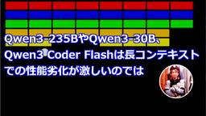

きしだのHatena
https://nowokay.hatenablog.com/
きしだのHatena
フィード

Qwen3-235BやQwen3-30B、Qwen3 Coder Flashは長コンテキストでの性能劣化が激しいのでは
きしだのHatena
Qwen3のアップデートがいろいろ出ていて、ベンチマークですごい結果を出したりしています。 けど、実際に使うと全然そんな性能が出てる気しないです。 これたぶん、コンテキストが長くなったときの性能劣化が激しいんじゃないかと思います。 なので、ベンチマークや、ちょっとプロンプト一発投げて返答を見ると性能よさそうに見えるんだけど、実際に使うとダメということになるんだと思います。 Qwen3 30Bアップデートとコーディングモデル Qwen3のアップデートは、先日の235Bに続いて、30B-A3Bのnon-thinkingモデルと、それをベースにしたコーディングモデルが出ていました。 Qwen/Qwe…
8時間前

Qwen3 235Bのコーディング力は相変わらず低い。Qwen3 Coderは期待できる。
きしだのHatena
アリババのQwen3 235Bがアップデートされて、reasoningとnon-reasoningが分離しました。また、Qwen3 Coderという480Bのコーディング用モデルも出ていたので、砂時計を実装させて試してみました。 Qwen3-235B-A22B-Thinking-2507はコーディングに期待できない Qwen3 235Bのアップデートは、先にnon-reasoningなモデルが出ていましたが、reasoningモデルも出てきました。 🚀 We’re excited to introduce Qwen3-235B-A22B-Thinking-2507 — our most adv…
7日前

Jakarta EEは、なぜJakartaなのにApache財団ではなくEclipse財団管理なのか
きしだのHatena
Java EEはOracleの元を離れてEclipse財団に寄贈されJakarta EEになりました。 このJakartaという名前は、Apache財団でのJava系プロジェクトを管理するプロジェクトの名前で、TomcatやMavenなども最初はJakartaの下にありました。 略称がJEEになるような名前でJavaに親和性が高いということで最終候補に残り、もうひとつの候補であるEnterprise Profileに対して、65%の支持をえて決まったのだと思います。 であれば、Apache財団に寄贈しないのはなぜってなりますが、スポンサーみたらわかりますね。 Eclipse財団のトップレベルス…
11日前
他組織のAIエージェントをA2Aで呼び出すのは非現実的かも
きしだのHatena
エージェントとエージェントで通信するA2Aプロトコルで、さまざまなエージェントがやりとりする世界みたいなのが描かれがちだけど、組織をまたがって自分たちでコントロールできないエージェントにシステムが依存するのってあまり現実的じゃないなと思ったのでまとめてみます。 図解するとこう。他組織のエージェントで、内部でMCPやFunction Callingを呼び出しているものを、自組織のエージェントからA2Aで呼び出すという構造。 ただ、他の組織が自分の組織のためにエージェントを作ってくれているということはなくて、ユーザーが人間として使うエージェントをこちらのエージェントから呼び出してるということになる…
16日前
オブジェクト指向のサンプルプログラムがだいたいヒドい理由
きしだのHatena
いまだにオブジェクト指向とか言ってるのか、という話ですが、いまだに「プログラミングの勉強はじめました。オブジェクト指向が目標です！」みたいなのがThreadsに流れてきたりして、いつまでも無くならんなぁと思うわけですよ。 で、まあオブジェクト指向を勉強してしまいたくなるのは仕方がないとして、オブジェクト指向推しの本でのサンプルがだいたいヒドいのが問題だなと思ったわけです。 アプリケーションを見据えていない オブジェクト指向の例として、自転車クラスだとか勇者クラスだとか定義するサンプルをみかけます。 自転車クラスを作る例の場合、車輪クラスがありサドルクラスがありペダルクラスがあり、ブレーキクラス…
21日前
AIの世界も「フリーランチは終わった」になってきてるのでは
きしだのHatena
去年くらいに作ったRAGなどAI関連のシステムを、単に今年4月のモデルに差し替えるだけで性能向上した、というのはいろいろなところであるように思います。 コーディングエージェントが、一部先進的な人だけではなく広く使われだしたのも、2月のClaude 3.7や5月にClaude 4による性能向上があってこそだと思います。 ただ、こういった、モデルを差し替えるだけでなんでも性能向上するというのは終わりつつある気がします。 2004年ごろまで続いたCPUのクロック向上が終わって、CPUを差し替えるだけで何でも性能向上する時代が終わったときに「フリーランチは終わった」と言われました。マルチコアによる並列…
1ヶ月前
AIでプログラマ不要になるというのは、プログラミング言語構文わかればプログラム組めるという誤解に基づくのでは
きしだのHatena
AIで日本語で指示をあたえればプログラムを作ってくれるようになって、プログラミング知識がなくても誰でもプログラムが組めるとか、プログラマが不要になるとかいう話が盛り上がってますね。 けど、実際にプログラマをやって、AIコーディングエージェントを使っていれば、プログラミング知識がなくても可能な領域というのはそんなに広くないことを感じていると思います。 たとえば、ほぼプロンプト一発で作ってもらった刺身タンポポゲームがあります。 このプロンプトはこんな感じです。 刺身にタンポポを乗せるゲームをJavaのSwingで作って。 刺身かネコが0.75秒ごとに表示されます。 刺身は、白い皿に、赤い板状の切り…
1ヶ月前
Tool Useが効かないDevstralでコーディングエージェントを作る
きしだのHatena
Mistal.aiからMistral 3.1 Smallをベースにしたコーディング専用モデルDevstralが出ていたので、これを使ってエージェントを作ろうと思ったのです。 Devstral | Mistral AI Devstralは、24Bというサイズで他の大きなオープンウェイトモデルも凌駕するコーディング性能を出しています。 ベンチマークは当てにならないことも多いですが、使い比べた実感としても確かにQwen3 235B-A22BやDeepSeekよりもコードを書くという印象です。 これを、以前作った、Tool Use(Function Calling)を使った雑なコーディングエージェント…
2ヶ月前
OuteTTSでテキストの音声化を試す
きしだのHatena
OuteTTSというののv1.0が出てたので試してみました。 前回のブログ内の文章を適当に読ませてみました。 風邪ひいてるときに読んだマンガ - きしだのHatena 「勇者」「美女」を読めなかったり「平和」が「ピンフ」になったりするので、書き換えています。あと、英語女性話者のプロファイルしかないので、英語訛りになってますね。 OuteTTSというT2Sモデルを試すけど、日本語の読み上げは微妙・・・なんか以前のバージョンにあった日本語話者プロファイルとかがなくて、英語女性話者しかない。 pic.twitter.com/PT6b0mlcta— きしだൠ(K1S) (@kis) 2025年6月5日…
2ヶ月前
風邪ひいてるときに読んだマンガ
きしだのHatena
風邪ひいて土日は寝てたりして、だいぶマンガを雑に読んでたので面白かったののメモ。 異世界多し。 気絶勇者と暗殺姫 勇者を暗殺するために美女３人がパーティーを組んで暗殺を狙うという話だけど、裏切りとかもなく平和。 6/14まで2巻まで無料で読める。 気絶勇者と暗殺姫【電子単行本】 1 (少年チャンピオン・コミックス)作者:雪田幸路,のりしろちゃん秋田書店Amazon 凶乱令嬢ニア・リストン 死にかけ病弱令嬢に転移して、最強令嬢で悪い人をのしていくやつ。 強すぎていい。 ところで、異世界に生まれなおすのが転生で、異世界にそのまま若返ったりしつつ移動するのが転移なんだけど、死んだ人の肉体に魂だけ入る…
2ヶ月前
AIエージェントの流れはAGI(汎用人口知能)から一旦離れる流れ
きしだのHatena
AIコーディングエージェントが流行りだしてますね。 AIコーディングエージェントでは、いろいろなロジカルな処理でLLMを制御することで、プログラミングの計画をたて実装してテスト、修正といった流れを実行します。 このAIコーディングエージェントを病院の診察室に持っていっても、うまく診療したりしませんね。 診療のためのエージェントは診療エージェントとして特別に実装する必要があります。 つまり、AIエージェントって独自実装で専門家していきます。 エージェントの核になるLLMは、どのような要件にも使える汎用の知能部品です。LLMが賢くなる流れは、AGI(汎用知能)に近づくものだったと思います。 けど、…
2ヶ月前
LLMの日本知識を測るのに山口県について聞くのがよかった
きしだのHatena
「山口県の特徴は？」でLLMの日本語知識が割と測れる気がしたので16GB VRAMで動く範囲でいくつかオープンモデルを試しました。 結論としては、日本語でのチャットなど日本語表現力が必要なら、オープンモデルではGemma3一択。 法律や商慣習に関わる処理や観光地での案内に使うなど、確実な日本知識が必要な場合、また1GB程度のサイズで日本語応対する場合などはLLM-jp-3がおすすめです。 Gemma3、Qwen3、ABEMA Qwen2.5 32B Japanese、LLM-jp-3、Sarashina2.2を試していきます。 Gemma3 まずGemma3。27Bで見てみます。 「石見銀山」…
2ヶ月前
古いコードを捨てて1から書き直したからこそ続いているソフトウェア
きしだのHatena
Joel on SoftwareにNetScapeを例に、古いプログラムを捨てて1から書き直したくなるのは戦略ミスだって書いてあるけど、あのとき書き直してなかったら続いてないんではって思ったので、1から書き直して続いてるソフトウェアを挙げてみる。 Firefox NetScapeからMozillaに移行するときに、新バージョンのリリースがなくなって、そこで致命的にシェアを落としたというのは確かにそうだと思う。 けど、そこで書き換えていなかったら、2005年のAJAXから始まるWebアプリの高度化についていけなかったと思う。 あそこで書き換えたからこそ、いまこの記事をFirefox上で書けてるん…
3ヶ月前
CPUが得意なことをCPUにまかせて少ないVRAMでも大きめのLLMを速く動かす
きしだのHatena
Redditに「VRAM足りないとき一部のレイヤーをCPUに任せるんではなく、レイヤー全部をGPUに載せてレイヤー内部のFFNだけCPUに持っていったら速くなった、なんでこれが標準じゃないんだ」というのがあったので、おうちのRTX 4060 Ti 16GBで試してみたら微妙に速くなりました。 https://www.reddit.com/r/LocalLLaMA/comments/1ki7tg7/dont_offload_gguf_layers_offload_tensors_200_gen/ Qwen3 30B A3Bで試してみる こういった指定がOllamaやLM Studioではできない…
3ヶ月前
クソデカオープンモデルではLlama4が最強かもしれない
きしだのHatena
もう全人類128GBとか512GBとか載ったMacを手にいれてクソデカモデルを試すようになっていますね。 ぼくもMac Studio 512GBを1日借りてて試したのだけど、Llama4がなんだかんだで強いという印象でした。 クソデカモデルの選択肢としては次のようなものがあります。512GB Macで動かしたときの数字も参考までに。 モデル パラメータ数 アクティブ コンテキスト長 マルチモーダル 量子化 推論速度 LLama4 Maverick 400B 17B 1M 〇 4bit 36tok/sec Llama4 Scout 109B 17B 10M 〇 8bit Qwen3 235B A…
3ヶ月前
Grokが仕事してないのにもうすぐできますって嘘ついてきたので、Geminiに差し替えるていったら、人間性は勝ってるので、と言い出す
きしだのHatena
GrokにXの投稿の傾向を解析してもらえるか聞いてみたら、できます！というのでお願いしたけど、いつまでもうだうだ理由つけてやらないので、Geminiと置き換えるぞ！っていったら、「「性能はGeminiにいさんが勝ってるけど人格いいので！伸びしろあるんで！2050年になったらちゃんとやります！」みたいなことを言ってて面白かったまとめ。 週間ニュースのまとめはじめました。 Grokのいいわけ いろいろ聞かれて、計算はじめるよって言ってくる。 取得中らしい そもそもGrokにバックグラウンドで計算して通知する仕組みあるんか？なさそうだけど。 といいながら進捗50% ここまで来て、アカウント正しいんか…
3ヶ月前
Qwen3はローカルLLMの世界を変えたかも
きしだのHatena
Qwen3が出ていて、14Bを中心にいろいろ試したのだけど、かなり使い物になって、日常的な用途ではこれでいいのでは、という感じもします。 4BでもGPT-4oを越えているという話もありますが、確かに単純な用途ではGPT-4oの代わりにしてもいいなと場面も割とありそうな出力です。さすがにちょっと込み入ったものだと4oだけど。 1.7Bなど小さいモデルも既存のモデルより使えるものになっていて、ローカルLLMの世界を変えそう。 解説動画も撮りました。 週間ニュースのまとめはじめました。 サイズとしては0.6B, 1.7B, 4B, 8B, 14B, 32Bと、MoEモデルの30B-A3B, 235B…
3ヶ月前
今のAIの急激な進化は、今までの遅れを取り戻しただけで、これからは普通の成長速度になるんでは
きしだのHatena
この2年半くらいで急激にAIが進化して、このままの速度で進化が進むように見えるけど、今までディープニューラルネットや自然言語処理が目立たなかったところに、急に注目されてリソースが投入されて時代が追いついただけな気がする。 H100というハードウェアはChatGPT直前にリリースされていて、どこそこが数万台導入みたいなときにはすでにこなれていた。 GPUを連携させてニューラルネットの学習をさせる技術もだいぶこなれていた。 学習に投入するデータもだいぶあふれていた。 自然言語処理の知見も結構蓄積されてた。 それがチャットができるようになったことで注目されて、H100をフルに使って人材や知見を投入し…
3ヶ月前
LangChain4Jで雑なAIコーディングエージェントを作る
きしだのHatena
ぼくもAIコーディングエージェントを作ったほうがいいんじゃないか、ということで、かろうじてコーディングエージェントと呼べるものを作りました。 指示したJavaファイルを作って保存して実行してエラー出なくなるまでやりなおすというものです。 ただまあ、このレベルだと、コーディングエージェントといっても、ファイル読み書きとコード実行ができればいいと思います。 なので、とりあえずこんな感じでsaveCodeとexecuteCodeのTool Callingを用意。見易さのためにUI関係の処理は削ってます。 @Tool(""" save the code into the file with givin…
3ヶ月前
Windowsで1.58bit推論モデル、BitNetを試す
きしだのHatena
1, 0, -1の3値で重みを表現するBitNet b1.58の、独自に4兆トークンで学習した2Bモデルが出ていたので試しました。 https://github.com/microsoft/BitNet だいたいReadmeの通りにやればいいんだけど、Windowsではハマリポイントあったのでメモ。Readme見れば書いてあるんだけど、見逃しがち。 まず、VS2022が必要、そしてVS2022コマンドプロンプトでの実行が必要です。 Visual Studio 2022 コミュニティ エディション – 最新の無料バージョンをダウンロードする 必要なコンポーネントも書いてあるけど、日本語での表記は…
3ヶ月前
少ないVRAMで長い動画を生成できるFramePackを試す
きしだのHatena
少ないVRAMで長い動画を生成できるFramePackというのが出ていたので、試してみました。6GBのVRAMでいいらしい。 Windowsは「明日またここに来てください」って書いてあったので、WSLでLinux版を動かしました。 https://github.com/lllyasviel/FramePack インストールは書かれてるとおりに pip install torch torchvision torchaudio --index-url https://download.pytorch.org/whl/cu126 pip install -r requirements.txt xfo…
4ヶ月前
ChatGPTにトランスフォーマーを説明させたメモ
きしだのHatena
トランスフォーマーでアテンションを計算して単語エンベディングにその重みを反映するコードでの説明 ChatGPT - Transformer原理のJava実装 わかりやすく図示してもらうためにHTMLを生成してもらったもの ただし、実際には、単語がどの単語を注目しているかなので、「聞いた」は「私は」に注目する一方で「私は」は「聞いた」にそこまで注目してないのような一方通行も起こり得るので、対称ではなくなるはず。 大規模言語モデル入門作者:鈴木 正敏,山田 康輔,李 凌寒技術評論社Amazon
4ヶ月前
「生成AI」の成り立ちと流れの雑なまとめ
きしだのHatena
「生成AI」という言葉の雑な流れのメモ。話題ごとにまとめているので、時系列は少し前後してます。 2012年、AlexNetで畳み込みニューラルネット(CNN)で画像認識の性能が劇的向上して、ディープラーニング大流行の幕開け 2014年、敵対的生成ネットワーク(GAN)で画像が生成できるようになる。 GANの流行で、それまでの「AI」が分析、認識、識別といった受動的なものだったことと対比して「生成AI」という言葉が使われだす。 画像や音声を生成するAI、「GAN」の特許が急増 | 日経クロステック（xTECH） 画風変換アプリなどでちょっと認知される。 写真を「ゴッホ風に」「ピカソっぽく」AIが…
4ヶ月前
Gemma 3とLangChain4JでローカルLLMでFunction Calling
きしだのHatena
ChatGPTでFunction Callingができるようになったときに、いろいろ試してたのでした。 OpenAIのFunction Callingを使って自然言語でツールの操作をする - きしだのHatena Gemma 3が案外Function Callingが動くので、試しにLangChain4Jを使ってローカルで試してみました。 今回は、この3つの関数を作ってます。LangChain4Jだとメソッドにアノテーションつけるだけでいいので楽ですね。 @Tool("move the object to the specified position") String setPosition(…
4ヶ月前
LangChain4JでLM StudioにアクセスするときはHTTP 1.1の指定が必要
きしだのHatena
LM StudioではOpenAI互換のAPIでLLMにアクセスできるのだけど、LangChain4JでアクセスするときにはHTTP 1.1を指定しないとレスポンスが返ってこない。 これと同じ問題。 PythonのFastAPIにJavaのHttpClientから接続しようとするとupgradeできないというエラーになるのでHTTP 1.1を指定する - きしだのHatena ということで、OpenAiChatModelを用意するときに、HttpClientBuilderを指定して、そのときにHTTP 1.1を設定しておく。 import dev.langchain4j.data.messag…
4ヶ月前
AI時代に必要なのはプログラミング能力ではなくコンピューティング能力
きしだのHatena
「プログラミング教育について語る会 」で話した内容をまとめておきます。 「AI時代のプログラミング教育」としたのだけど、内容的には「コンピューティング能力を伸ばそうぜ、その道具としてプログラミングしよう」みたいな話になりました。 https://nextbeat.connpass.com/event/346052/ 資料はこちら まず前提として、AIのコーディング能力が7ヵ月で倍になっているというのがあります。なので、今現在の能力で話をしてもあまり意味がなく、ゆくゆくはかなりのレベルでAIがコードを書くという想定をしておいたほうがいいです。 元ネタのツイートはこれ https://x.com/…
4ヶ月前
コーディングはQwQに軍配かな。Gemma 3は編集が続くと弱そう
きしだのHatena
前回のエントリでGemma 3がよすぎてQwQの出番ないみたいなことを書いたんですけど、コードを編集させるとQwQのほうがセンスありそうな気がします。 Gemma 3やQwQなどでローカルLLMがそろそろ使い物になってきた - きしだのHatena 「ブロック崩しをJavaのSwingで作って」でブロック崩しを作らせてみました。 ただ、手元で動かしてると、2bit量子化のせいだと思うけど、修正したら以前のバグが復活みたいなことが頻発で、どちらもちょっと実用的ではありませんでした。プロンプトとして与える会話履歴が量子化でボヤけるんだろうな。まあ手元でコードの編集を曲りなりにもやってくれるというの…
5ヶ月前
Gemma 3やQwQなどでローカルLLMがそろそろ使い物になってきた
きしだのHatena
GoogleからGemma 3が出たり、AlibabaがQwQを出したりで、27Bや32BでDeepSeek V3の671Bに匹敵すると言っていて、小さいサイズや2bit量子化でも実際結構賢いので、普通の人がもってるPCでもローカルLLMが実用的に使える感じになってきています。 Gemma 3 Gemma 3は単一GPUで動くLLMで最高と言ってます。 https://blog.google/technology/developers/gemma-3/ 1B、4B、12B、27Bがあって、最高なのは27Bだけど、今回はLM Studioで12Bの4bit量子化版を使います。 LM Studio…
5ヶ月前
効率よい検索の連鎖と長期記憶は一緒に実現する
きしだのHatena
OpenAIのDeep ResearchやGrok 3のDeep Searchのように、検索エージェントによって得た情報からさらに検索を続けて考えを深めていくような仕組みが広まってきてます。 ただ、検索内容を見てると、検索結果からもっとたぐっていけないかなと思うことがあります。 たとえば、リュウジさんがおとといくらいに「CMみたいな動画作ってみたら分かるんでは？」みたいに煽られて、昨晩そんな動画をアップしたら、経緯を踏まえず「茶化してそんな動画とるなんて最低」みたいに燃えるということが起きてるのですが、見つけてくれるかどうか試してみたけどダメでした。 「2件のポスト」の片方に「動画なんて絶対に…
5ヶ月前
Grok3のイマココ感あるリアルタイム性に「未来」を感じた
きしだのHatena
XにGrok 3が来ていました。 X、最新AI「Grok 3」を無料開放 「サーバーが倒れるまで」 - Impress Watch Xの最新の投稿をふまえた生成ができることからのイマココ感と、反応速度や賢さのバランスから「普通の人としての自分」にちょうどよく、「AIが一緒にいてくれる未来」というのを感じました。 凄いものを凄い人だけが使うんだけなくて、凄いものを普通の人が普通に使うというのが「未来」って感じする。 凄いコンピュータが世界に5台だけあるんじゃなくて、普通の人が普通に凄いコンピュータを持ってるのが、コンピュータは世界に5台だけあればいいと言われたときから見た「未来」。 OpenAI…
5ヶ月前